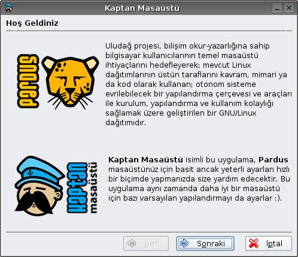

Kaptan Desktop
Kaptan Desktop
Kaptan Desktop is an application program which helps to users when Pardus desktop enviroment works for the first time. While Kaptan giving the general information about Pardus, program also will set some default configuration for a better desktop.
Screenshots
|  |
 |
Download
Kaptan can be downloaded from SVN repository
Information and documents on Pardus web pages can be used freely anywhere with original source credit.
For information and suggestion(s) please write to bilgi_at_pardus.org.tr
TÜBİTAK - UEKAE, PK.74 41470, Gebze / Kocaeli.